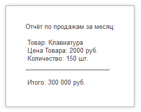

1C Rush > Типы данных > Строки
Что такое строковый тип данных?
В языке 1С:Предприятие строка – это тип переменной, предназначенный для хранения текстовой информации. Любые символы: буквы (русские, английские), цифры, знаки препинания, пробелы – всё это может быть частью строки.
Представьте, что вы заполняете анкету: имя, фамилия, адрес, название товара, комментарий. В программировании для каждого такого поля используется строковая переменная. Платформа 1С обрабатывает строки довольно гибко – вы можете соединять их, вырезать части, искать нужные слова, менять регистр, удалять лишние пробелы.
Создание строковых переменных
Для работы со строками переменные создаются по общим правилам — посредством явного или неявного объявления, при этом само строковое значение всегда заключается в двойные кавычки.
Многострочные строки
Обычная строка заканчивается там, где закрываются кавычки. Но часто нужно записать текст с переносами строк – например, длинное письмо или отчёт. В 1С для этого используется символ вертикальной черты | в начале каждой строки (кроме первой). Сам перевод строки в текст не вставляется, но визуально код выглядит аккуратно.

Результат выполнения
Сложение строк (конкатенация)
Объединить две или более строк в одну можно с помощью оператора +. Это очень часто используется для формирования сообщений, составления полного имени, построения SQL-запросов и т.д.
Кавычки внутри строки
Если текст внутри строкового литерала содержит двойные кавычки, их необходимо удвоить "". В таком случае компилятор воспримет их как один символ кавычки в составе строки, а не как маркер окончания строкового литерала. Дело в том, что если написать Роман "Война и мир", то компилятор решит, что строка закончилась после слова "Роман". Правильным решение будет удвоить кавычки.
Основные действия со строками
| Операция | Вызов | Выходной результат |
|---|---|---|
| Сложить строки |
"A"
+
"B"
|
"AB" |
| Длина строки |
СтрДлина("Строка")
|
6 |
| Удалить пробелы по краям |
СокрЛП(" Строка ")
|
"Строка" |
| Верхний регистр |
ВРег("иванов")
|
"ИВАНОВ" |
| Нижний регистр |
НРег("ИВАНОВ")
|
"иванов" |
| Титульный регистр |
ТРег("иван петров")
|
"Иван Петров" |
| Первые N символов |
Лев("1С:Предприятие", 2)
|
"1С" |
| Последние N символов |
Прав("1С:Предприятие", 7)
|
"приятие" |
| Часть строки с позиции |
Сред("1234567", 3, 2)
|
"34" |
| Поиск позиции подстроки |
СтрНайти("Иван Петров", " ")
|
5 |
| Замена подстроки |
СтрЗаменить("1.5", ".", ",")
|
"1,5" |